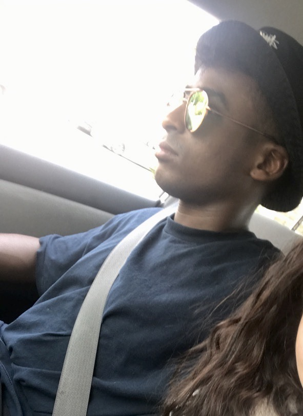

I’m a creative web developer and currently pursuing a career in software engineering also I am a Santa Monica College student looking to complete a dual degree program in Computer Science and Electrical Engineering.
Originally a New-York native, speaking 4 languages (human languages). For the most part I was exposed to the tech industry through my father, while growing up through his handling of networking systems using hardware from Cisco networking systems.
My father worked independently helping Muslim educational institutes and halal butcher shops upgrade their hardware to handle more data and implement more networking features. My exposure to computer hardware from a young age made me particularly interested in connecting the world together digitally.
Having seen the tech industry build up through YouTube, myspace and Facebook and evolving into the social bubble that it is today made me passionate about social platforms and the digital person to person experience. I was recently selected as a part of the inaugural Snap Engineering Academy of 2020 where we learned front-end programming, back-end programming with JavaScript and Node.JS/Express, hosting services like Heroku and Firebase and familiarize ourselves with Git/GitHub.
Outside of my computer science peculiarities I enjoy playing the Jazz Guitar, travelling, and I am an accomplished Olympic-style amateur boxer.